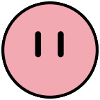

Mr Kirby


Remember Always Call me when theres Trouble in Happy Land
09773552720
And Always Pick Me In Smash Bros!

What is the story about Kirby?
Kirby can be described as a naïve, cheery, and childlike alien creature who made his home in Dream Land after arriving from elsewhere, with his true origin being unknown.

Who are They?
Waddle Dee are red-orange creatures with pear-shaped faces and yellow feet who serve as the most basic enemy in most Kirby games. They have appeared in every Kirby game to date starting with Kirby's Dream Land.

What are Kirbys Powers?
Kirby's signature skill is his ability to inhale objects or creatures and spit them out as projectiles, as well as the ability to suck in air to float over obstacles. His Copy Ability grants him the power to adopt the abilities of the creatures he inhales, while also wearing various costumes or transforming his shape.